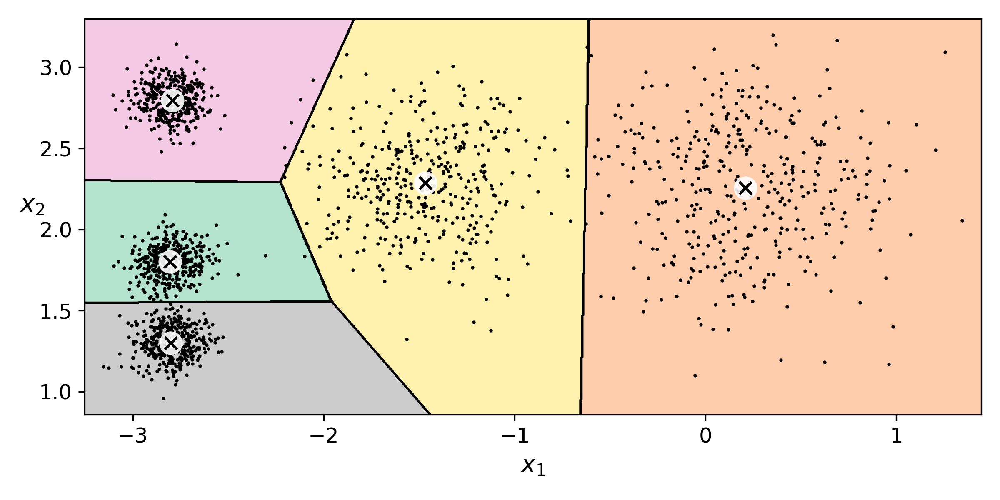

Linear regression is a supervised machine learning algorithm. Linear regression is useful for modelling the relationships between a dependent variable and one or several independent variables. The purpose of linear regression is to discover (and quantify the strength of) significant correlations between dependent and independent variables.
Supervised Learning
Supervised machine learning is the term used when the dataset provided has labels.
There are many different types of supervised learning algorithms which can get split into two main categories.
These are:
- Regression: Linear Regression; Logistic Regression; Polynomial Regression; Stepwise Regression; Ridge Regression; Lasso Regression; ElasticNet Regression; Decision Trees.
- Classification: k-Nearest Neighbours (kNN); Support Vector Machines (SVMs); Decision Trees; Neural Networks.

The image shows an overview of the different Machine Learning tasks for the different types of problems.
What is Regression Analysis?
Regression analysis is a form of predictive modelling technique which investigates the relationship between a dependent (target) and independent variable (s) (predictor). This technique gets used for forecasting, time series modelling and finding the causal effect relationship between the variables. For example, the relationship between rash driving and the number of road accidents by a driver is studied best through regression.
Regression analysis is an essential tool for modelling and analysing data. Here, we fit a curve/line to the data points, in such a way that the differences between the distances of data points from the curve/line get minimised.
Why do we use Regression Analysis?
Regression analysis estimates the relationship between two or more variables. Let’s understand this with an easy example:
- Let’s imagine you want to estimate growth in sales of a company based on current economic conditions. You have the recent company data, which indicates that the growth in sales is around two and a half times the growth in the economy.
- Using this insight, we can predict future sales of the company based on current and past information.
There are multiple benefits of using regression analysis. They are as follows:
- It indicates the significant relationships between the dependent variable and independent variable.
- It shows the strength of the impact of multiple independent variables on a dependent variable.
Regression analysis also allows us to compare the effects of variables measured on different scales, such as the effect of price changes and the number of promotional activities. These benefits help market researchers/data analysts/data scientists to eliminate and evaluate the best set of variables to get used for building predictive models.
In-depth Look into Linear Regression
What is Linear Regression?
K-Means is one of the hard partitioning clustering algorithms. The centre of the cluster represents each cluster of data, and each data point gets assigned to the nearest cluster centre, also known as the centroid. However, the number of clusters is a pre-set value. This pre-set value is known as the number of K. K-Means is an iterative process which starts with random initialisation of the centroids and updates on each iteration.
Determining a good cluster, by K-Means Standards
K-Means looks for a couple of key things for deciding what makes a good cluster.
These are:
-
With each data point to minimise the Sum of Squared Error (SSE) from the data to their
corresponding centroid.

denotes the
cluster.
represents the centroid to the cluster
represents the distance between the data point x and its centroid.
- Therefore the stopping criteria for the number of iterations K-Means goes through is either very small changes in the SSE, showing there is convergence within the data, or if a fixed number of iterations has been reached.
The Stages of K-Means

K-Means is an iterative clustering algorithm that aims to find local maxima in each iteration. This algorithm works in these 5 steps:
- First, a specified desired number of clusters K. From the above image, we can see that there are five different clusters.
- The algorithm randomly assigns the centroids for each cluster.
- Each data point gets assigned to the closest centroid to the data point.
- Once all data points have been assigned to the corresponding centroid, the centroids are updated.
- Steps 3 and 4 are repeated until no improvements are possible: Similarly, we’ll repeat the 3rd and 4th steps until we’ll reach global optima. When there will be no further switching of data points between the clusters. It will mark the termination of the algorithm if not explicitly mentioned. 
K-Means in Action
Clustering algorithms get used for disease classification in medical science. However, you will also see clustering get used for customer classification in marketing research and environmental health risk assessment in environmental engineering.
To better illustrate the nature of classification, though, take a look at Twitter and its hashtagging system. Say you just got hold of your favourite drink in the entire world: an iced caramel latte from Starbucks. You’re so happy to have your drink that you decide to tweet about it with a photo and the phrase “This is the best latte EVER! #StarbucksRocks.” You include “#StarbucksRocks” in your tweet so that the tweet goes into the #StarbucksRocks stream and is classified together with all the other tweets that get labelled as #StarbucksRocks. Your use of the hashtag label in your tweet told Twitter how to classify your data into a recognisable and accessible group, or cluster.
Clustering has a large number of applications spread across various domains. Some of the most popular uses of clustering are:
- Recommendation engines
- Market segmentation
- Social network analysis
- Search result grouping
- Medical imaging
- Image segmentation
- Anomaly detection
Link to Additional Documents